CoreAutocargaficha ✓
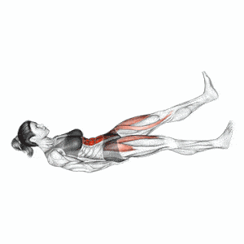
EX-CORE-001
Estabilización isométrica con piernas alternas
core profundo
AntiextensiónDif 2
Cada ejercicio como entidad computable: identidad, clasificación, biomecánica, requisitos, árbol de progresión y calidad técnica. Toca un ejercicio para ver su ficha. La biblioteca visual sigue funcionando sin conexión; la ficha estructurada alimenta el motor de prescripción.

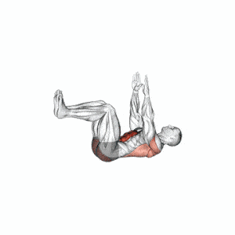
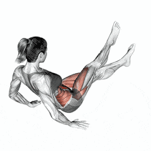
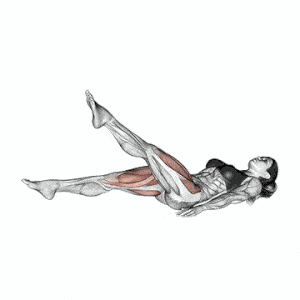
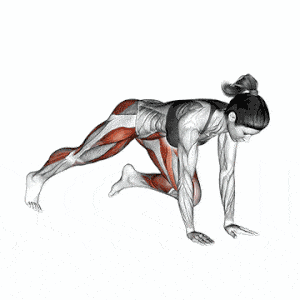
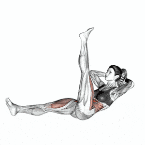
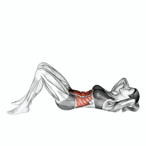
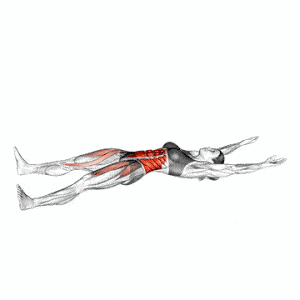
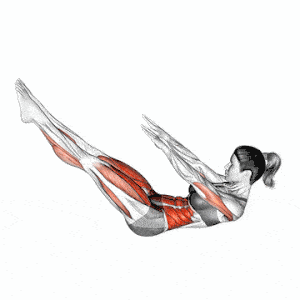
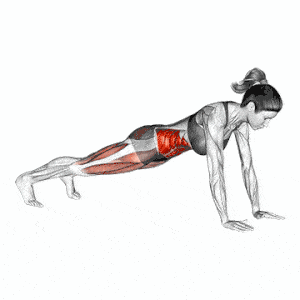
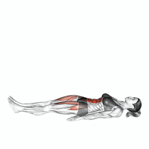
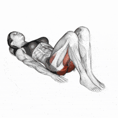
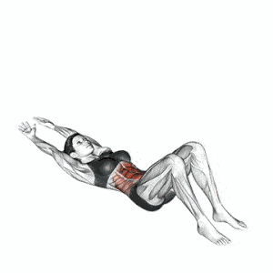
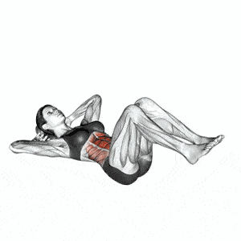
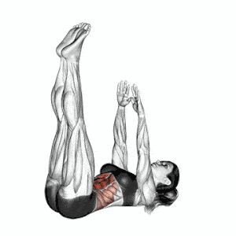
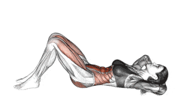
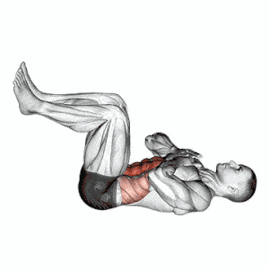
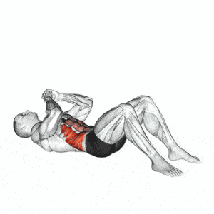
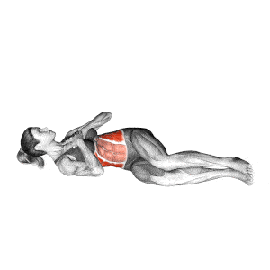
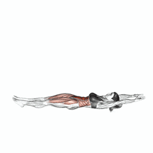
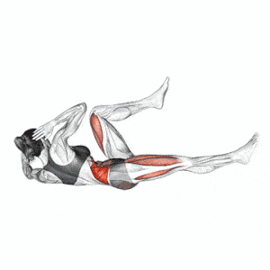
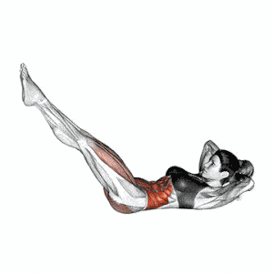
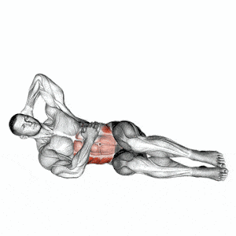
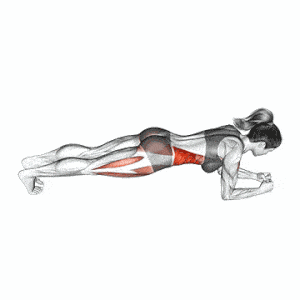
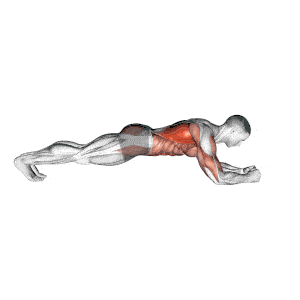
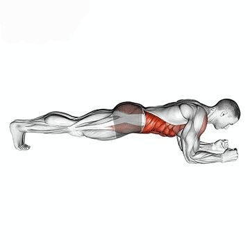
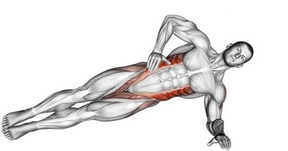
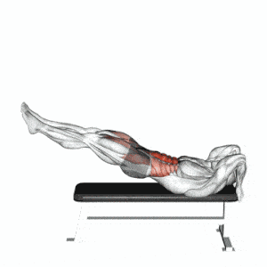
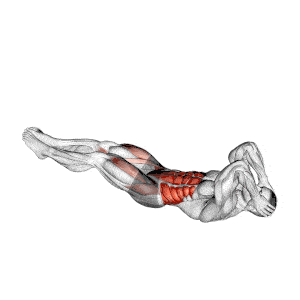
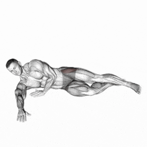
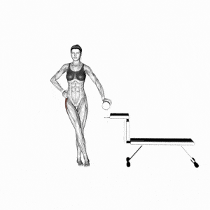
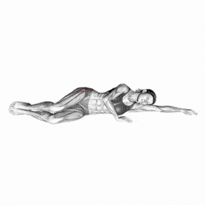
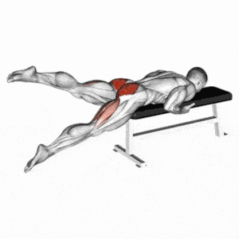
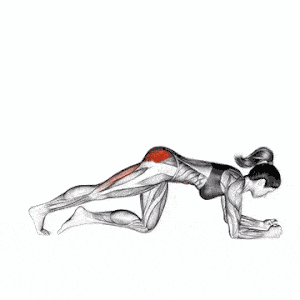
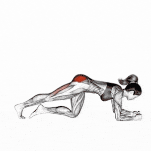
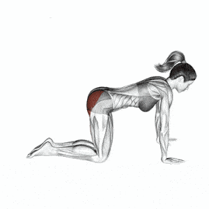
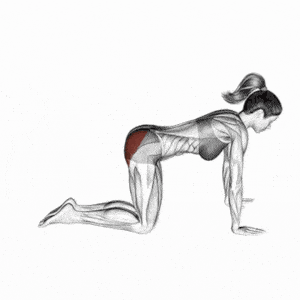
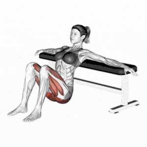
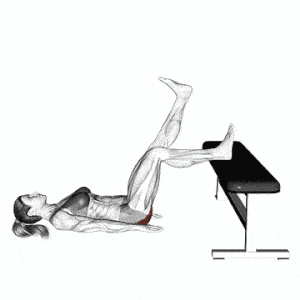
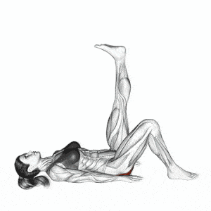
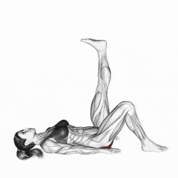
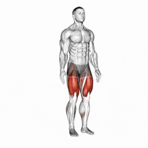
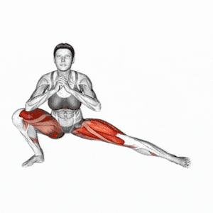
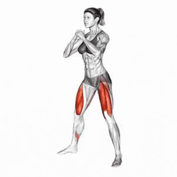
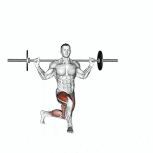
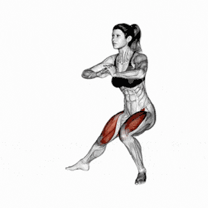
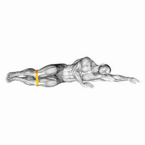
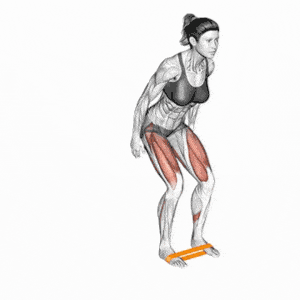
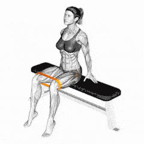
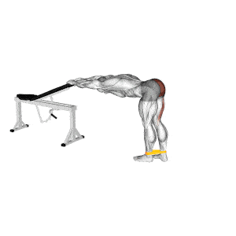